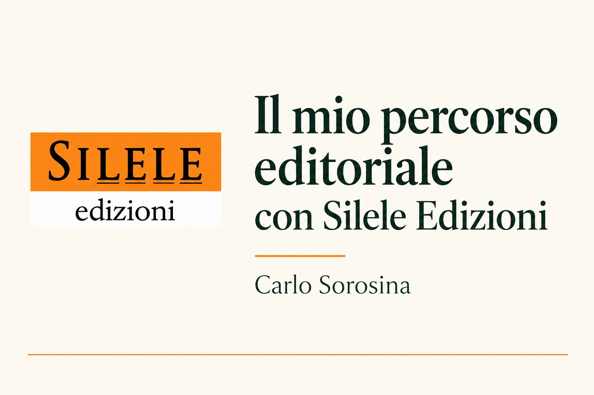
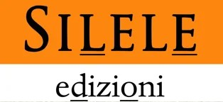

Percorso editoriale
Perché ho scelto Silele Edizioni: il mio percorso editoriale
La pubblicazione di un libro nasce da un percorso. La scelta di una casa editrice ne diventa parte e, nel mio caso, Appunti nell’anima ha segnato l’incontro con una realtà dell’editoria indipendente italiana.
Di Carlo Sorosina · 17 novembre 2026

Il desiderio di pubblicare nasce spesso molto prima della decisione di cercare un editore. Comincia quando alcuni testi, scritti in momenti diversi, iniziano a mostrare un filo comune e chiedono di essere riletti come parti di un’unica storia.
Per me è accaduto con poesie, aforismi e riflessioni composti tra il 2008 e il 2016. Erano nati dall’osservazione della quotidianità, dei legami umani, dell’attesa e dei luoghi capaci di continuare a vivere dentro di noi. Il Lago d’Iseo accompagnava molte di quelle pagine come paesaggio reale e come spazio della memoria.
Quando ho cominciato a immaginare un libro, non cercavo soltanto qualcuno disposto a stamparlo. Cercavo un interlocutore capace di accogliere testi brevi e forme diverse senza costringerli in una definizione troppo stretta.
Affidare un manoscritto significa consegnare a un’altra persona una parte del tempo che lo ha fatto nascere.
Per questo la scelta di una casa editrice non poteva essere separata dal significato dell’opera. Avevo bisogno di capire dove quei testi avrebbero trovato posto, quale percorso li avrebbe accompagnati e quale relazione sarebbe potuta nascere dopo la pubblicazione.
Chi è Silele Edizioni

Silele Edizioni è una casa editrice indipendente che presenta il proprio catalogo attraverso più collane e generi: narrativa gialla, libri per ragazzi, avventura, titoli dedicati al calcio e opere difficili da ricondurre a un solo ambito.
Nel tempo il catalogo ha superato i cinquecento titoli. La varietà non riguarda soltanto i generi, ma anche gli autori, i temi e i pubblici ai quali sono rivolte le opere.
Una parte riconoscibile dell’identità dell’editore è legata all’editoria itinerante: fiere del libro, incontri e occasioni nelle quali i volumi vengono portati direttamente tra i lettori. È un modo concreto di intendere la presenza editoriale, fondato anche sul contatto, sulla conversazione e sull’incontro.
Un catalogo non racconta soltanto quali libri vengono pubblicati. Racconta anche quali differenze una casa editrice sceglie di accogliere.
Tra le collane figura The Other, lo spazio editoriale nel quale è stato pubblicato Appunti nell’anima. Riflessi sul lago del cuore. La sua natura trasversale è risultata coerente con un libro che riunisce poesia, aforisma e riflessione.
Perché ho scelto Silele Edizioni
Mi ha colpito prima di tutto la possibilità di trovare, nello stesso catalogo, opere molto differenti. Romanzi storici, gialli, fantasy, libri per bambini, poesia e progetti legati al territorio convivono senza dare l’impressione che ogni voce debba assomigliare alle altre.
Per un autore emergente questo aspetto conta. Significa poter immaginare il proprio libro dentro un catalogo già ampio, mantenendo la specificità della propria scrittura.
Ho considerato importante anche la dimensione concreta dell’attività editoriale. La presenza alle fiere e nelle occasioni pubbliche mostra un rapporto con il libro che continua dopo la stampa. Il volume diventa un oggetto che passa di mano, viene presentato, osservato, raccontato e talvolta scoperto per caso.
La mia scelta non è nata dall’idea di un percorso semplice o automatico. Pubblicare con una realtà indipendente richiede anche all’autore presenza, pazienza e responsabilità. Occorre contribuire alla vita del libro, costruire relazioni e accettare che la visibilità si formi poco alla volta.
Ho riconosciuto un percorso possibile, concreto e compatibile con la natura del mio libro.
La pubblicazione di Appunti nell’anima
Quando il manoscritto è stato accolto, i testi hanno iniziato a uscire dalla dimensione privata nella quale erano rimasti per anni. La revisione e la preparazione del volume mi hanno costretto a guardarli da una distanza nuova: non più soltanto come appunti legati ai momenti in cui erano nati, ma come pagine destinate a incontrare altri lettori.
Nel 2026 Appunti nell’anima. Riflessi sul lago del cuore è stato pubblicato da Silele Edizioni nella collana The Other. Il libro raccoglie poesie, aforismi e riflessioni dedicate alla memoria, ai legami umani e ai luoghi che continuano a vivere dentro di noi.
La pubblicazione ha aperto una fase diversa. Sono arrivati i primi lettori, le recensioni, gli incontri e le fotografie scattate durante le occasioni pubbliche. Il volume è entrato in alcune biblioteche ed è stato inserito su Mappa Letteraria per il legame con il Lago d’Iseo e il territorio del Sebino.
Ognuna di queste esperienze ha aggiunto una traccia. Una recensione ha restituito una lettura che non avevo previsto. Una conversazione durante un firmacopie ha mostrato quali parole fossero rimaste a chi aveva attraversato le pagine. L’ingresso in una biblioteca ha dato al libro una possibilità di durata diversa da quella di una singola presentazione.
È in questa stratificazione che riconosco il significato più concreto della pubblicazione. Un libro comincia con l’uscita, ma acquista una storia attraverso ciò che accade dopo.
Approfondisci il libro, le recensioni e il percorso pubblico di Appunti nell’anima.
Cosa ho imparato dal percorso editoriale
La prima lezione riguarda il tempo. Tra la scrittura, la rilettura, la valutazione editoriale e l’incontro con i lettori esistono passaggi che non possono essere compressi senza perdere qualcosa.
Ho imparato anche che la revisione non consiste soltanto nel correggere. Significa comprendere quali testi appartengono davvero a un’opera, riconoscere le ripetizioni involontarie e difendere, quando serve, le scelte che fanno parte della propria voce.
Il rapporto tra autore ed editore richiede chiarezza. Aspettative, responsabilità, distribuzione, promozione e disponibilità delle copie devono essere osservate con realismo. La relazione funziona meglio quando entrambi conoscono il proprio ruolo e continuano a comunicare anche dopo l’uscita del volume.
La visibilità non arriva in un solo momento. Si costruisce attraverso prove piccole, verificabili e capaci di restare.
Una biblioteca che accoglie il libro. Una recensione firmata. Un articolo. Un incontro documentato. Una nuova persona che cerca il nome dell’autore dopo averlo incontrato altrove. Il percorso cresce attraverso questi passaggi, senza confondere la presenza con l’autorevolezza e la visibilità con le vendite.
Uno sguardo ai progetti successivi
Appunti nell’anima rappresenta la prima opera pubblicata, ma non esaurisce il mio percorso. Continuo a lavorare su testi poetici e riflessivi e, nello stesso tempo, ho aperto la scrittura a forme e destinatari differenti.
Tra i progetti in preparazione c’è Le dita birichine – Storie di mani e piedi, un lavoro per l’infanzia con testi di Carlo Sorosina e illustrazioni di Maria Cristina Mazzoleni. È un passaggio verso un linguaggio diverso, più narrativo e giocoso, che conserva tuttavia l’attenzione per i gesti quotidiani e per ciò che il corpo comunica.
Anche questa evoluzione conferma il valore di una relazione editoriale capace di accompagnare opere differenti. Quando il progetto sarà pubblicato, questa pagina potrà accoglierne il percorso senza cambiare la propria funzione: raccontare nel tempo le tappe, le scelte e ciò che ogni libro insegna al successivo.
Altri manoscritti restano in valutazione e continueranno a seguire il proprio cammino. Un progetto ancora in preparazione non deve essere raccontato come un risultato già raggiunto. Fa parte della storia dell’autore, ma conserva il suo carattere aperto.
La pubblicazione come tappa
Guardando il percorso compiuto, la scelta di Silele Edizioni non coincide con un solo contratto o con l’uscita di un titolo. È diventata parte di una storia più ampia, fatta di lavoro sui testi, incontri, persone e occasioni nelle quali il libro ha trovato un lettore.
La pubblicazione offre a un’opera una forma e una data. La sua vita, però, continua nelle relazioni che riesce a costruire.
Per questo considero ogni libro una tappa. Porta con sé ciò che è stato scritto, ma apre anche domande nuove: come evolvere la propria voce, come raggiungere lettori differenti, come conservare coerenza mentre cambiano le forme e i progetti.
Un percorso editoriale cresce così.
Un libro alla volta, una relazione alla volta, lasciando che il tempo trasformi ogni incontro in una traccia.